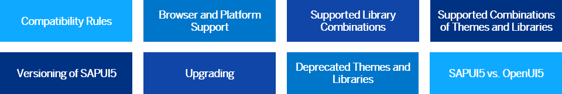

Read Me First
Before you start using OpenUI5 productively, please read the important information in the section. Here you read everything you need to know about supported library combinations, the supported browsers and platforms, and so on.
This image is interactive. Hover over each area for a description. Click highlighted areas for more information.
